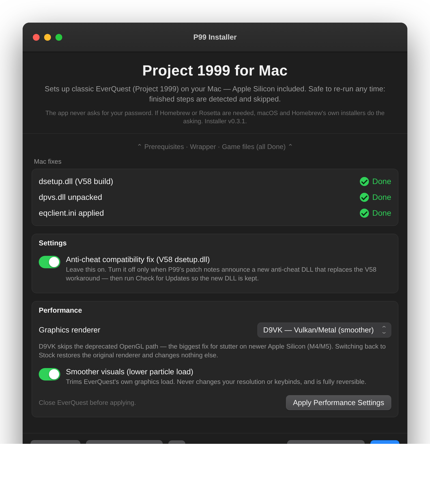
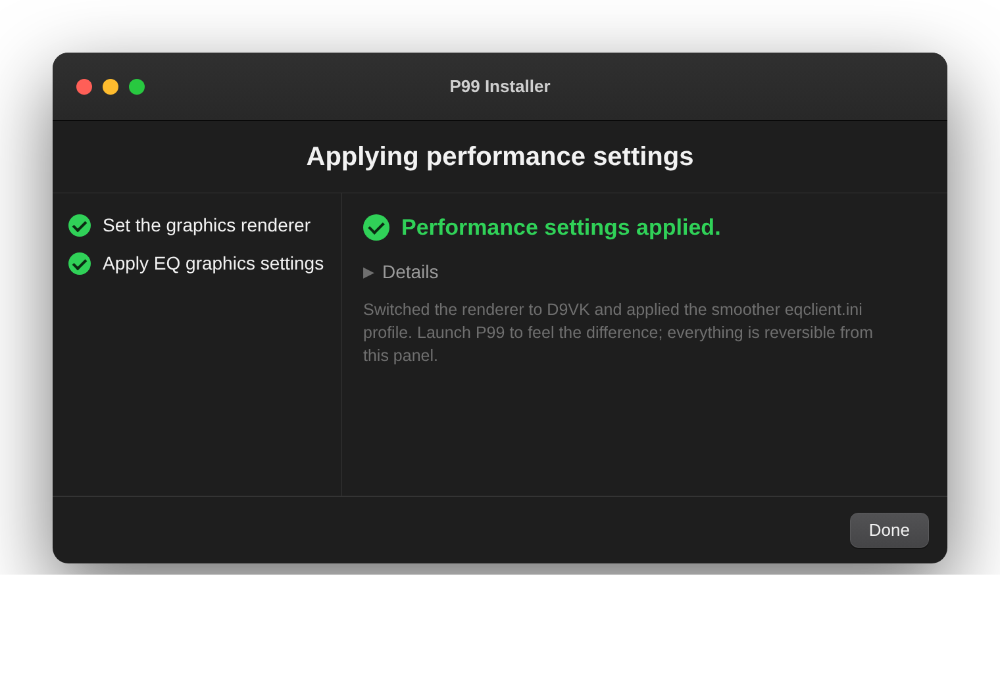

Performance tuning¶
Project 1999 is a 2005 game, so on a modern Mac the bottleneck is almost never raw GPU or CPU power — it's the translation stack between the game and the metal. This page collects the tunable knobs that actually move the needle on stutter and choppy frame pacing, ordered by impact, with the tradeoffs stated honestly.
Everything here is opt-in and reversible. None of it changes your resolution or your keybinds/UI, and every knob can be switched back to the stock config without touching your other settings. If you don't opt in, your install behaves exactly as before.
The one rule that bites people: EQ rewrites
eqclient.iniwhen it exits, so edit that file (or run the INI scripts below) only while the game is closed, or your changes are overwritten.

Why it stutters on this stack¶
Three costs stack up, and only the first two are tunable:
- The renderer path. By default rendering runs through wine's built-in
wined3d: Direct3D 9 → OpenGL → Apple's deprecated GL-on-Metal shim (see HOW-IT-WORKS.md). Apple has not optimized that OpenGL layer in years; on newer GPUs (M4/M5) it is a major source of uneven frame times. The template bundles an alternative renderer that skips it entirely (lever 1) — a big win on some machines, and much slower on others, so it stays opt-in. - Thread scheduling. Wine's
msync(mach-semaphore) fast path smooths the hand-offs between the game's threads. It was set but not reaching the real game session (lever 2 explains and fixes that). - Rosetta translation. x86 → ARM translation is a fixed cost of running a Windows game on Apple Silicon; the ~1–2 minutes at 100% CPU on every launch is the anti-cheat decrypting itself under Rosetta (normal — see TROUBLESHOOTING.md). This is not tunable, and no CPU-affinity trick changes it (see "What doesn't help" below).
Lever 1 — Try the D9VK renderer (big win for some, much worse for others)¶
What it does: replaces the Direct3D 9 → OpenGL → deprecated-shim path with D9VK: Direct3D 9 → Vulkan → MoltenVK → Metal. When it works, it is the most direct route to the GPU and a real smoothness improvement. When it doesn't, it can be dramatically slower — a single-digit-FPS slideshow has been reported on an M4 MacBook Pro. That outcome is a known property of this stack, not user error; the fix is simply to switch back (below). wined3d remains the safe, verified default.
cd scripts
P99_RENDERER=d9vk ./60-renderer.sh # switch to D9VK
P99_RENDERER=wined3d ./60-renderer.sh # switch back to the stock renderer
Or use the installer app's Performance panel (renderer picker → Apply).
Why D9VK can be slow, and what the script now does about it:
- It was running on the wrong MoltenVK. The wrapper template ships two
MoltenVK builds: a recent stock build, and CodeWeavers' patched build
(
moltenvkcx/) — the one the bundled D9VK (DXVK 1.10) was actually built and tested against. The wrapper's library links pointed the engine at the stock build, which is years newer than that DXVK and turns on "Metal argument buffers" by default — a documented DXVK performance cliff. Switching to d9vk now re-points the engine at the CX build (and a wrapper rebuild preserves that;./status.shreports it asmoltenvk cx). - Async shader compilation was never switched on. The bundled DLL is the
dxvk-async build, but the
DXVK_ASYNC=1switch that activates it never reached the game, so every new shader compiled on the render thread. Switching to d9vk now injects it (plusMVK_CONFIG_USE_METAL_ARGUMENT_BUFFERS=0as a belt-and-suspenders, fast-math, and device-loss resume) through the sameLSEnvironmentchannel as lever 2. Switching back to wined3d removes all of it. - One cost we cannot fix: this is a 32-bit game running through wine's
WoW64 mode, and without a Vulkan extension called
VK_EXT_map_memory_placed(which neither bundled MoltenVK supports) every GPU-memory map by a 32-bit game takes an expensive fallback. A 2005 engine maps vertex buffers every frame. On some machines this cost dominates everything else. The indirect buffer maps experiment below attacks it from the other side; if that doesn't help either, wined3d is the answer.
Diagnostics (optional, for reporting):
P99_RENDERER=d9vk P99_RENDERER_DEBUG=1 ./60-renderer.sh # verbose DXVK+MoltenVK logs
P99_RENDERER=d9vk P99_DXVK_HUD=fps,frametimes ./60-renderer.sh # in-game FPS overlay
P99_RENDERER_DEBUG=1 makes the game write ~/Games/EverQuest/eqgame_d3d9.log
and makes a ./40-launch.sh --debug trace include the MoltenVK version line —
which tells us exactly which build loaded and whether argument buffers are off.
Re-run the switch without the variable to turn either off.
Experiment — indirect buffer maps (if D9VK is still slow):
P99_RENDERER=d9vk P99_DXVK_INDIRECT_MAPS=1 ./60-renderer.sh # on
P99_RENDERER=d9vk ./60-renderer.sh # off (re-apply without it)
This targets cost 3 above — the expensive 32-bit memory-map path — from the
other side: instead of making the maps cheap (we can't), it tells DXVK to stop
handing the game direct pointers into Vulkan-mapped memory
(d3d9.allowDirectBufferMapping = False). Buffer locks then land in DXVK-owned
CPU memory and DXVK manages the upload itself, which keeps the game's per-frame
geometry traffic off the one code path this stack makes expensive. The price is
extra CPU copying, so this is a measured experiment, not a default: try it with
the FPS overlay on and keep whichever is faster on your machine. The setting
lives in a single one-option file inside the wrapper (drive_c/dxvk-p99.conf
— your game folder is not touched), is handed to DXVK via DXVK_CONFIG_FILE,
and both disappear when you re-apply without the knob or revert to wined3d.
./status.sh reports it as dxvk_maps (indirect vs default).
How it works / reversibility: 60-renderer.sh backs up the stock
d3d9.dll once as d3d9.dll.wined3d.bak, drops in the bundled D9VK d3d9.dll,
adds a wine DLL override so wine loads it, re-points the engine's MoltenVK link
at the CX build, and injects the LSEnvironment tuning above. Switching back
restores the backup and removes every one of those changes — nothing else in
your prefix or eqclient.ini is touched, so you can flip back and forth freely
to compare. The active renderer shows up in ./status.sh (and the app
checklist) as renderer, the MoltenVK pairing as moltenvk.
Tradeoffs / caveats:
- D9VK is opt-in, not the default: the stock wined3d path is the one this
project has verified on real hardware. If D9VK misbehaves for you (much lower
FPS, missing textures, a crash on load), switch straight back with the
wined3d command above — and see
TROUBLESHOOTING.md
if you want to report it usefully.
- d3dmetal and dxmt are also accepted (P99_RENDERER=d3dmetal) but are
experimental for EQ: they target Direct3D 11/12, which EQ doesn't use, so
they may not change anything for this game.
Lever 2 — Wine msync actually reaching the game¶
The bug this fixes: the normal launch is open P99.app, which LaunchServices
runs detached — it does not inherit the shell environment. So the
WINEESYNC=1 WINEMSYNC=1 that wine_env() sets reached the install steps and the
--debug launch, but never the real double-click / Play session. The wrapper
now injects them through the bundle's Info.plist (LSEnvironment), which
LaunchServices does apply to the launched app, so wine finally sees them in-game.
WINEMSYNC(mach semaphores) is the macOS payload — this is the one that matters for scheduling smoothness.WINEESYNCis a Linux-native primitive, effectively ignored on macOS; it's set only for parity.WINEFSYNCis Linux-only and is deliberately not used here. If you read advice elsewhere to "enable fsync," it does not apply to macOS.
How to get it: rebuild the wrapper once — it skips the finished pieces and just refreshes the launch environment:
cd scripts && ./10-build-wrapper.sh
Note a routine ./50-update.sh (P99 patch day) only re-stages game files; it does
not rebuild the wrapper, so run 10-build-wrapper.sh yourself if you installed
before this change.
Lever 3 — EQ's own graphics load (view distance, particles, FPS cap)¶
EQ has its own graphics settings that trade visual richness for a steadier frame
rate. The authoritative place to change these is the in-game Options window
(Display / Particles) — it's live and safe. For a repeatable, scripted default,
the same settings map to eqclient.ini [Defaults] keys, which these scripts can
set for you. EQ silently ignores any key it doesn't recognize and regenerates
unset keys at its own default, so applying and reverting is non-destructive.
Apply to an existing install (game closed) with the surgical patcher — it changes only the performance keys and leaves every other setting (resolution, keybinds, colors, gamma) unchanged:
cd scripts
# A conservative bundle, plus a 60-FPS cap:
P99_APPLY_PERF=1 P99_PERF_PROFILE=smoother EQ_FPS_CAP=60 ./35-perf-ini.sh
# Revert just those keys (everything else untouched):
P99_APPLY_PERF=0 ./35-perf-ini.sh
Fresh installs pick up the same knobs automatically if the EQ_* vars are set
when 30-apply-mac-fixes.sh runs.
| Env var | eqclient.ini key |
Effect |
|---|---|---|
EQ_FARCLIP=<n> |
FarClipPlane |
View distance — lower draws less, smoother in open zones |
EQ_SPELL_PARTICLES=<n> |
SpellParticleDensity |
Spell particle density — lower in busy fights/raids |
EQ_ENV_PARTICLES=<n> |
EnvironmentParticleDensity |
Ambient particle density |
EQ_FPS_CAP=<n> |
MaxFPS / MaxBGFPS |
Frame cap — steadier pacing, less heat/fan (try 60) |
P99_PERF_PROFILE=smoother |
several | Bundle: lowers particle density, disables water-specular and heat-shimmer |
Explicit EQ_* vars override the smoother bundle for that key. Resolution is
never touched by any of this — change window size the usual way
(TROUBLESHOOTING.md → "Window is tiny"); note that a smaller
window is itself a fill-rate win if you're GPU-bound.
Applying from the installer app¶
Prefer buttons to the terminal? The installer's Performance panel (shown above) is the same set of knobs with the same scripts behind them — every control maps to a variable documented on this page, so the terminal and the app always produce identical results:
| Panel control | Equivalent |
|---|---|
| Graphics renderer | P99_RENDERER (lever 1) |
| Indirect buffer maps (shown for D9VK) | P99_DXVK_INDIRECT_MAPS=1 |
| Show FPS overlay (shown for D9VK) | P99_DXVK_HUD=fps,frametimes |
| Verbose renderer logs (shown for D9VK) | P99_RENDERER_DEBUG=1 |
| Smoother visuals | P99_APPLY_PERF=1 P99_PERF_PROFILE=smoother (lever 3) |
| Frame-rate cap | EQ_FPS_CAP=30/60 (lever 3) |
Set your choices, then press Apply Performance Settings with the game
closed. It runs 60-renderer.sh and 35-perf-ini.sh for you and reports when
it's done; turning everything off and applying reverts cleanly. A full audit of
what each switch touches on disk lives in
WHAT-WE-CHANGE.md.

Measuring¶
- In-game FPS: EVERQUEST's own frame counter, or just feel out a busy zone
(e.g. the East Commonlands tunnel, a raid) before and after a change. Under
d9vk,
P99_DXVK_HUD=fps,frametimes(lever 1 diagnostics) draws an overlay. ~/Games/EverQuest/Logs/dbg.txtconfirms the game reached the engine.- Activity Monitor → Window → GPU History shows whether you're GPU-bound; if the GPU is pinned, lever 1 (renderer) and lever 3 (particles/FPS cap) help most.
./status.shreports the activerenderer, which MoltenVK build the engine is paired with (moltenvk:cxunder d9vk,stockotherwise), and whether the smoother INI profile is applied (perf_ini).
What doesn't help (or we can't expose)¶
- Pinning to performance cores. The game launches detached via
open, so the scripts never hold its process totaskpolicyit — and macOS already schedules the foreground GUI app on P-cores by default.taskpolicy -bwould push it the wrong way (toward efficiency cores). There is no supported "force P-core" knob to offer, and it would not address the renderer/Rosetta costs that actually dominate. Keep P99 as the active foreground app and that's the best macOS gives. WINEFSYNC. Linux-only (see lever 2). Setting it on macOS does nothing.WINE_CPU_TOPOLOGY. Occasionally suggested when a game misreads core count; untested on this stack and not exposed — mentioned only so you don't chase it.- Disabling Rosetta / "native" tricks. The current engine depends on general-purpose Rosetta; the post-Rosetta direction is research, not a knob (see HOW-IT-WORKS.md).